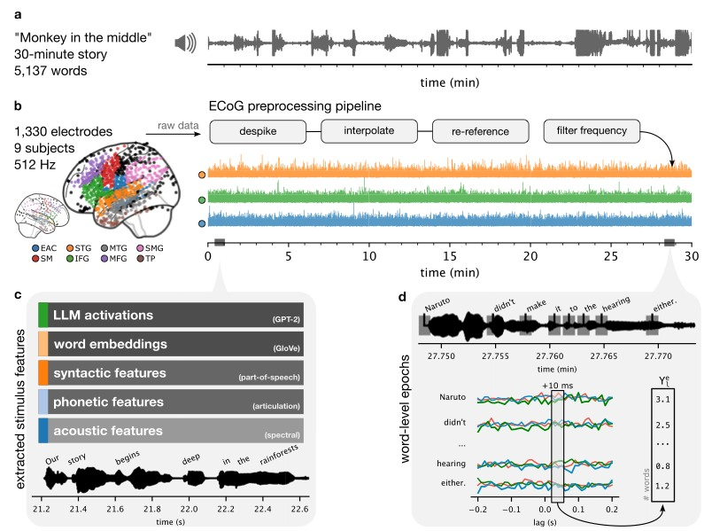
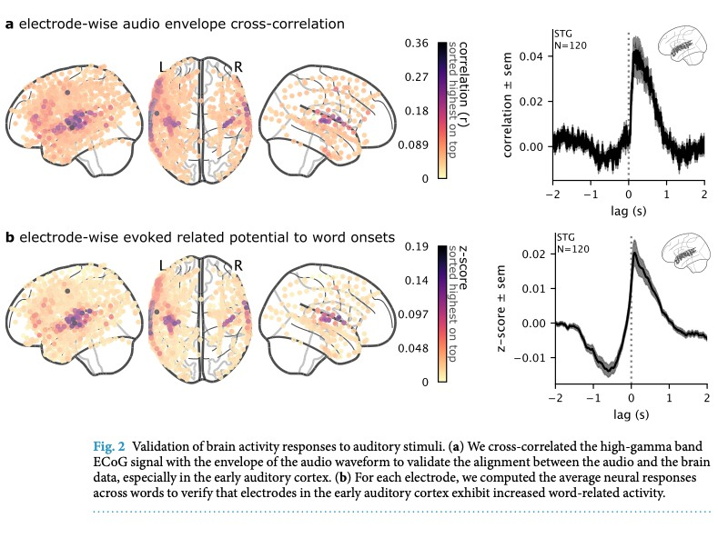
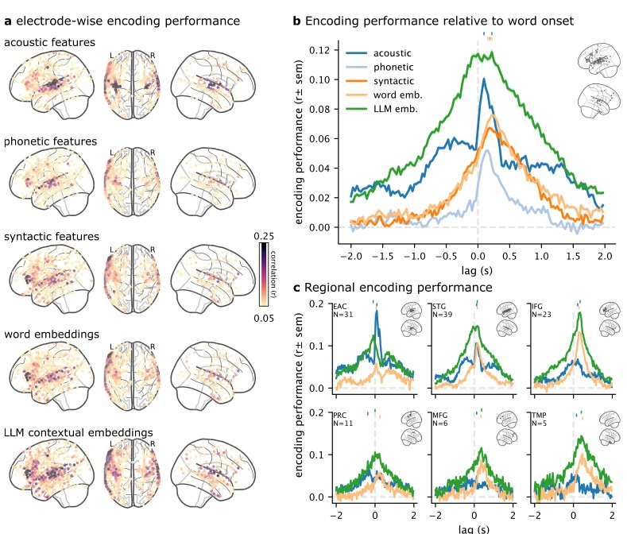

Podcast 用同一段故事比较语言特征对 ECoG 的预测
作者Zaid Zada · Samuel A. Nastase 等，Hasson 团队
出处Scientific Data 12, 1135 (2025) · DOI
阅读版本本地出版社 PDF，9 页；下文规模指论文发布版本
资源OpenNeuro ds005574 · 官方代码 · 官方教程
代码核对commit e7ba666e0986；静态阅读 encoding、ERP、audio cross-correlation 与绘图 notebook，未下载或分析原始神经数据
核心洞见把语言特征与同一段自然故事的高时间分辨率脑反应对齐，用留出预测比较不同特征能解释的响应成分。
读法面向 ISC 新手；完整推导词级响应、ridge、交叉验证与滞后解释。所有教学模拟都与原论文结果区分。
1. 一个共同刺激，两个互补的问题
九个人听同一个约 30 分钟的播客故事，研究者从临床植入电极记录脑反应。对 ISC 而言，共同刺激提供了一条共享时间轴，可以问不同人的反应是否一致。对 encoding model 而言，音频、词音、词性和语言模型表示提供了几套具体假设，可以问它们分别能预测哪些电极、何时的反应。
本文是一篇数据资源与教学分析论文。它同时提供原始记录、预处理 high-gamma、带时间戳转录、五类特征及分析教程。它不是以 ISC 为主要实证统计的研究，也没有直接给出一套跨人电极对应后的 ISC 结果。主要验证证据是声学时间对齐、词 onset 响应和留出 encoding。【文中有据：Background & Summary，p.1–3】

图 1 最值得看的是最后一格：词×特征矩阵 $X$ 映射到某一个电极、某一个相对词 onset 时间的响应向量 $y$。复杂的 ECoG 原始连续数据，在这一步被转为一系列可重复比较的回归任务。空间位置和时间 lag 都必须保持明确，否则一个预测相关值很容易被误读为整个语言网络的统一解释率。
2. 九名临床参与者的电极覆盖不构成统一脑图
九名参与者接受癫痫相关的临床颅内监测，植入位置完全按临床需求决定。数据包括 grid、strip 和 depth，共 1,330 个电极；有的参与者有高密度 hybrid grid。电极在左/右半球的分布、脑区覆盖与采集设备都不一样。【文中有据：Methods 与 Table 1，p.3–4】
表 1 同时提供年龄、性别、用手、部分行为指标和临床诊断。它帮助判断覆盖与人群的来源，不能将每个电极当作一名健康志愿者。一个受试者的多个电极共享临床背景、参考方式与同一场记录，因此电极数量并非独立被试数量。
80 个电极没有定位，31 个因谱形或噪声异常被标记。是否重叠及最终分析可用数，应直接核对 channels.tsv 与 electrodes.tsv，不能只做 $1330-80-31$ 就认定分析样本。某些电极可能不在脑组织上，论文也明确说明了这种情况。
原始设备有 512 Hz、带通 0.16–250 Hz 的 NicoletOne，及 2048 Hz、0.01 Hz 高通的 NeuroWorks。后续都降到 512 Hz，不会让两种设备的原始传递特性变得完全相同。原始采样间隔 $1/512\approx1.953$ ms，也不等于最终 high-gamma 包络或 encoding 曲线能以同样精度定位神经事件。
3. 从电压到 high-gamma 包络包含多个有代价的变换
处理顺序为剔除异常电极、统一采样率、去尖峰与 PCHIP 插值、common average reference（CAR）、工频陷波，再提取 high-gamma。作者根据功率谱是否大致符合 1/f、是否有异常持续振荡等评定异常通道，去尖峰阈值按正文写为 median 上方四个 quartiles；精确实现应继续核对数据整理教程，不能未经验证把这句话改成四个标准差或四个 IQR。【文中有据：ECoG preprocessing，p.3–4】
$v_e\in\mathbb R^{T_s}$ 为电极电压，$\mathcal G$ 为参与平均的通道集合，$E_g=|\mathcal G|$，$\widetilde v_e$ 为重参考结果。公式说明 CAR 减掉的是共同模式。集合是否只包含有效电极、是否区分电极类型，会影响结果，因此必须保存通道列表。
【教学示例】三个电极在某一时刻为 $(10,12,11)$，CAR 后为 $(-1,1,0)$，共同的约 11 被拿掉。但若三个电极真的一起响应刺激，该共同神经成分也会减小。CAR 能削弱共模噪声，也能改变电极之间的相关；重参考前后相关不是无条件可比。
$\mathcal B$ 是 Butterworth IIR 带通，$\mathcal H$ 为 Hilbert 变换，$z_e$ 是解析信号，$A_e$ 是包络。70–200 Hz 描述载波频段，$A_e(t)$ 的涨落却可能慢得多。正文将它称为 broadband power，但上式的模是振幅包络；若严格定义功率应是 $A_e^2$。是否平方、取对数、平滑和归一化，要由实际 derivative 和教程确认，不能只靠名称替代操作。
陷波频率是 60、120、180、240 Hz。120/180 落在 high-gamma 区间内，因而所谓 70–200 Hz 并不是一整段完全无缺的频率信息。滤波是否双向零相位、边界填充方式和包络平滑也影响时间扩散。本文公式解释算法，不代表已审查数据整理仓库中全部滤波实现。
【教学预演】若词出现前看见高 gamma 上升，先检查滤波是否跨未来样本、包络是否经过对称平滑、邻词响应是否重叠，再讨论预测性语言处理。最小诊断是在完全知道 onset 的人工脉冲上运行同一处理，观察信号会向前扩散多少。这样可以把处理的时间模糊与神经先行区分开。
4. 特征文件的行必须对上它自己的转录
原始 ECoG 为 EDF，预处理 derivative 为 MNE FIF；BIDS-iEEG 元数据记录通道质量和定位，MRI 已去面部。刺激目录包含原始音频、转录和不同特征空间。每类特征至少有 features.hdf5 与 transcript.tsv，两者逐行对应；不同分词或特征提取可改变行数，不能用一份全局转录盲目索引所有矩阵。【文中有据：Data Records，p.3–4】
| 特征 | 表示内容 | 需要保留的区别 |
|---|---|---|
| 声学 | 80 维 log-mel 频谱，经词周围采样展开 | 时间×频率的展平维度取决于具体帧数 |
| 音素 | 一个词是否含某些音素 | 正文背景写 44 维，验证段写 40 维 |
| 句法 | 50 个 POS 标签加 45 个依存关系 | 共 95 维的词级二值特征 |
| 非上下文词向量 | 同一词的固定表示 | 背景举 300 维 GloVe，验证段对 spaCy 写成 95 维，不能视为同一已核定矩阵 |
| 上下文表示 | GPT-2 XL 受先前词影响的隐藏表示 | 背景说明 1600 维，实际使用层与 token-to-word 聚合需核对 |
官方 encoding.py 将属于同一 word_idx 的 token 向量平均，组成词向量，再移除没有 onset 的词。这是一项明确定义的聚合，不等于最后 token、首 token 或任意拼接。若比较模型，每类特征最终进入分析的词集合也应一致，否则差异可能来自留出的词不同。
5. 图 2 的两道验证分别检查连续与词级时钟

第一道校验把音频包络 $a(t)$ 与电极 high-gamma $A_e(t)$ 作 cross-correlation。早期听觉区的相关较高，峰一般在神经响应稍晚于声音的位置。第二道校验按词 onset 截取曲线并跨词平均，查看听觉区是否在 onset 附近上升。两者分别检查连续声学对齐和词时间戳对齐。【文中有据：Technical Validation，p.5】
按本式约定，正 $\tau$ 表示取更晚神经样本，所以神经落后声音会在正 lag 出峰。不同程序可能交换相关输入，lag 符号必须核对。$t_k$ 是第 $k$ 词 onset，$K$ 为可用词数。这里 ERP 以 high-gamma 包络为对象，不是把高 gamma 又变回原始电压诱发电位。
上式先说明逐 lag 的相关概念。当前 audioxcorr.py 的实际实现是整条曲线先减均值，用 scipy.signal.correlate 求各 lag 的内积，再用两条完整曲线的能量平方根归一化；它没有在每个重叠窗口重新计算均值和分母。因此边缘 lag 的值与逐窗口 Pearson 不完全相同。它将神经序列放在第一个输入，读取保存的 lag 时应沿该顺序核对正负号。
词间隔远短于四秒窗口，邻词反应会大量重叠。一次清晰平均上升说明时间戳和信号具有合理关系，并没有隔离每个词独立诱发的完整因果响应。图 2 主要是资源质量验证，不以它证明语义层次、记忆过程或人脑等同 GPT。
6. 词级分段把每个 lag 变成一次回归
令 $K$ 为保留的词数，$D$ 为特征维度，$E$ 为有效电极数，$L$ 为相对 onset 的采样点数。词特征为 $X\in\mathbb R^{K\times D}$，分段后的神经响应为 $Y\in\mathbb R^{K\times E\times L}$。固定一个电极 $e$ 与 lag $\tau$，目标向量是 $y_{e,\tau}\in\mathbb R^K$。
$w_{e,\ell}\in\mathbb R^D$ 表示该电极、该时刻的特征权重；$b$ 为截距。这里跨词拟合：第一个样本是第一个词周围某个时刻的响应，第二个样本是第二个词周围同样相对时刻的响应。它与对完整连续时间逐点拟合不同，也与将所有 lag 作为输入去预测当前响应的 FIR 模型不同。
【教学示例】三词 onset 为 $(1.0,1.4,1.9)$ s，只看两个特征，$X=\begin{pmatrix}1&0\\0&1\\1&1\end{pmatrix}$。固定电极和 $\tau=0.2$ s，神经采样时刻是 $(1.2,1.6,2.1)$ s。如果对应响应 $y=(2,3,5)$，则 $w=(2,3)$、截距 0 能完全拟合。将 lag 换成 −0.2 s 就会取 $(0.8,1.2,1.7)$ s，同一个特征矩阵对应另一条目标向量。
论文研究 −2 到 +2 s。官方代码通过 MNE epochs 建立分段，再重采样为 32 Hz，间隔 31.25 ms；四秒乘 32 Hz 约为 128 点，精确长度取决于 epoch 端点与 MNE 的重采样规则，应读取 epochs.times 与实际数组形状。代码将 $E\times L$ 展平为多目标矩阵 $Y'\in\mathbb R^{K\times(EL)}$，一次拟合许多输出，再把相关分数还原成 electrode×lag。概念上逐电极逐 lag 的模型与这个向量化实现可以一致。
epochs.times、分数最后一维和 lag 字段逐项对齐，避免把样本索引直接当秒。7. Ridge 用可控偏差换取稳定的高维权重
当特征维度达到上千，而每个训练折只有几千词时，许多特征高度相关。普通最小二乘可能找到很大的正负权重互相抵消，在训练集看起来很好，到了新段落就失效。Ridge 在误差之外加一个权重长度惩罚。先对训练数据中心化，省略截距：
第一项是 $K$ 个词上预测误差的平方和，第二项惩罚 $D$ 个权重的平方和。增大 $\lambda$ 通常让拟合更平缓，不再为了追逐小变化使用极大的权重。因为惩罚依赖特征单位，训练折内的标准化是重要前提。若损失改成平均误差，数值相同的 $\lambda$ 含义也会改变。
展开并对权重求梯度。
令梯度为零，得到正则化正规方程。
当 $\lambda\gt0$ 时矩阵可逆，得到唯一解；实际程序通常求解线性系统或分解，不必显式求逆。
形状是 $X^{\mathsf T}X:D\times D$，$X^{\mathsf T}y:D$，所以输出仍为 $D$ 维权重。截距一般单独处理，不加入同样惩罚。若 $X=U\operatorname{diag}(s_j)V^{\mathsf T}$，各方向的训练预测被因子 $s_j^2/(s_j^2+\lambda)$ 缩小：数据支持较弱的小奇异值方向更早被压低。
两个完全共线特征的完整算例
【教学示例】取 $X=\begin{pmatrix}-1&-1\\0&0\\1&1\end{pmatrix}$，$y=(-1,0,1)^{\mathsf T}$。两列完全相同，$X^{\mathsf T}X=\begin{pmatrix}2&2\\2&2\end{pmatrix}$，$X^{\mathsf T}y=(2,2)^{\mathsf T}$。无正则时，只要 $w_1+w_2=1$ 都可完美拟合，不能识别哪一列真正贡献。
当 $\lambda=4$，两个权重都是 0.25，预测为 $(-0.5,0,0.5)$。权重稳定且对称，预测幅度只有原来一半。对这三个点，Pearson 相关仍为 1，因为形状完全一致；$R^2=1-\mathrm{SSE}/\mathrm{SST}=1-0.5/2=0.75$。因此预测相关和解释方差不能直接互换。
拖动 $\lambda$，看数据弱方向如何先被缩小。下图是奇异值平方分别为 4 与 0.1 的教学模型，不是本文电极结果。
曲线表示预测沿各数据方向保留的比例。正则稳定的是可预测结构，并不会让共线特征的神经归因自动变得唯一。
8. 外层留出检验预测，内层选择正则
原文采用两折交叉验证，每次用半段故事训练、另一半测试，最后交换。当前代码 KFold(n_splits=2, shuffle=False) 对应按词顺序的连续分段；训练部分内部用 5 折选择 ridge，候选 alphas=np.logspace(1,10,10)，即 $10^1$ 到 $10^{10}$。这是当前快照的具体网格，不应假设对其他损失归一化也有同样含义。
上标 $(-f)$ 表示模型没有使用外层测试折拟合。正文说平均两折相关，当前绘图路径也以相应结果作汇总。外层训练的 StandardScaler 学特征均值方差；目标 $Y$ 的 scaler 也只 fit 训练部分，再 transform 测试部分。RidgeCV 的内层选择则嵌在外层拟合之内。
需要精细区分一处实现细节：Pipeline 中的特征 scaler 先对整个外层训练折拟合，再由 RidgeCV 做内层切分，因此内层验证的特征分布进入了 scaler 的统计量。这没有使用外层测试标签，但若要严格评估内层选择，应将 scaler 也放进内层循环。这里是静态代码判断，没有运行数据来量化其影响。
【教学预演】若打乱词做随机划分得到很高分，换成连续块并在边界留出足够间隔，观察分数是否稳定。每个词周围四秒的 epoch 可能与相邻词共享原始样本，滤波和上下文也跨边界。连续两折减少了大量邻近泄漏，但边界附近仍应按目标时间尺度检查；模型还只在同一故事内部留出，不能由此证明跨故事泛化。
9. 图 3 展示模型在区域和时间上的不同覆盖

图 3A 对每个电极取不同 lag 上的最大 encoding 相关。图 3B 汇总不同特征的 lag 曲线，图 3C 再按 EAC、STG、IFG、PRC、MFG、TMP 分区。LLM 上下文特征在较广电极范围内有较高预测相关；声学特征在早期听觉区、词 onset 附近仍可高于 LLM。这个区域差异比一句所有电极都由 LLM 解释更接近图中的证据。【文中有据：p.6–7】
图中只展示至少一类特征显著的电极，阈值写为 $p\lt0.01$、FDR corrected。图3C 的 N 是入选电极数，例如 EAC 31、STG 39、IFG 23；它们不是各区域独立参与者人数。跨电极 SEM 也不能自动代表跨人的推广不确定性。
np.stack(model_sigmasks).all(0) 取得五类都显著的交集，再绘制平均曲线；这与图注至少一类显著的并集口径不同。其均值使用选中电极，SEM 代码却使用全部电极。读图可按出版图描述现象，精确复现需要先固定交集/并集及误差条的实际样本，不能将当前代码默认为出版结果的完整同版实现。对每个电极取 max lag 会产生选择效应：即使各 lag 都是噪声，最大值也往往偏正。是否对 lag 搜索、模型空间以及电极检验族充分校正，要核对完整推断实现。官方仓库的 notebooks/encoding.ipynb 包含可继续审查的绘图与显著性步骤；本次以论文图注所报告的阈值为准，不声称重跑验证过其错误率。
静态核对还看到，当前 utils.py 以两条独立高斯随机向量的相关生成零分布，之后与跨 lag 最大分数比较。这一构造没有在零分布中保留实际特征自相关、模型训练及最大 lag 搜索。它是本快照推断实现的一项具体适用性问题；需要更贴合分析流程的 block、phase 或其他零模型来检验影响，本次没有数据重算结果。
较高预测相关支持该特征空间含有与脑信号有关的信息。它不证明大脑采用相同架构、同一训练目标或相同计算路径。LLM 向量同时携带词、句法、语义和上下文，比较单独模型不能把提升完全归因于某一个独特机制。
10. 自相关可以让当前特征预测先前响应
图 3 中 LLM 曲线在词 onset 前两秒也高于某些其他特征。作者自己指出上下文特征整合前文，且不同回归量的自相关可能影响时间形状。因此负 lag 结果需要先考虑跨词连续性。【文中有据：p.6–7】
【教学构造】$z_k$ 是第 $k$ 词的上下文状态，$\eta_k$ 为独立单位方差噪声，$|\rho|\lt1$。若 $\rho=0.8$，当前状态与前一词相关 0.8、与前两词相关 0.64。设脑反应只是对已经出现的词正常响应，$y_{k-1}=z_{k-1}$，则当前特征 $z_k$ 仍可预测过去的 $y_{k-1}$。整个系统没有提前获取未来词。
拖动 $\rho$，观察理论相关随跨词距离的尾部怎样变宽。下面的横轴是相隔词数，纵轴为 $\rho^{|m|}$，从机制上演示时间相关，不拟合原文曲线。
只要特征跨词相关，负方向也出现尾部。词出现前相关的存在，和对尚未出现内容的特异预测，是不同层级的证据。
若要研究预测性处理，应控制特征自身的时间相关、既往音频和既往词的可预测部分，比较可预期与不可预期条件，并检查时间处理是否使用未来样本。可以用特征增量或残差化切开解释，但相应操作也改变了被测试的表示，必须在训练数据内拟合并解释其含义。
11. 独特贡献需要联合模型与方差分解
令 $A$ 为声学特征，$L$ 为 LLM 特征。单独模型 $A$、$L$ 的得分不同，只能说明它们各自有多少可预测信息。若要问 LLM 是否包含声学之外的信息，可以在同一留出集比较联合模型与声学模型：
这是常见的两组特征分解写法。$U_L$ 为相对声学的增量，$S$ 为按该分解定义的共享部分。必须使用一致目标、划分和嵌套调参；相关 $r$ 不能原样代入当作可加方差。交叉验证 $R^2$ 可以为负，正则化与有限数据也可能使这些分量出现负值，因此不能把每格都当真实神经成分的非负占比。作者在 Usage Notes 推荐 variance partitioning，本文没有把每个电极的独特 LLM 贡献完整展示出来。
12. 真正开展跨被试相关还需建立空间对应
如果把 A 的第 17 号电极直接对 B 的第 17 号电极求相关，编号没有跨人解剖含义。可选择两人共同覆盖的 ROI、使用各自 native T1 定位后构建区域信号，或在独立训练数据上学习功能表示对应。不同方案改变被测对象：ROI 平均比较粗尺度共同响应，功能对齐比较变换后表示的共享结构。
【教学推广】$E_i$ 是第 $i$ 人不同的电极数量，$W_i\in\mathbb R^{E_i\times d}$ 是将其映射到共同 $d$ 维空间的变换。若 $W_i$ 由测试故事同一时段以最大化相关拟合，之后在该时段报告相关就存在循环选择。应使用独立时段训练、留出时段评估，并检查覆盖差异、参考方式和空间不确定性。
这份数据适合把共享时间结构与具体语言特征模型放在一起研究，但不包含直接的事件记忆表现或眼动轨迹证据。若要将它接到记忆或眼动问题，需要新增可观测量及匹配设计。本文已经建立的是一套能对齐、能验证、能比较表示的自然语言 ECoG 资源。
13. 代码快照让可复现范围具体可见
| 官方文件 | 可核对操作 | 复用时的判断 |
|---|---|---|
code/encoding.py | token 平均到词、MNE epoch、32 Hz、两折外层与五折内层 ridge | 核对词集合、时间单位与嵌套标准化 |
code/erp.py | 全程按通道 z-score、按 onset 分段、跨词平均 | 它不是每词 prestimulus baseline subtraction |
code/audioxcorr.py | 连续音频与脑信号时间关系 | 检查 lag 的正负号及采样率换算 |
Makefile | GPT-2 XL 指定 layer 24，列出特征模型命令 | 集群 sbatch 和 slurm.sh 引用需另行配置 |
notebooks/encoding.ipynb | 结果汇总、区域图和模型时间曲线 | 明确电极选择及多重比较口径 |
目前仓库 Makefile 引用的 code/slurm.sh 在所克隆快照中没有随附，脚本也使用相对的 ../monkey 数据路径。理解这些输入前提之后，可以将分析配置到自己的环境；本次交付完成的是原文和关键代码的精读，不包括原始数据下载、运行或结果复现。